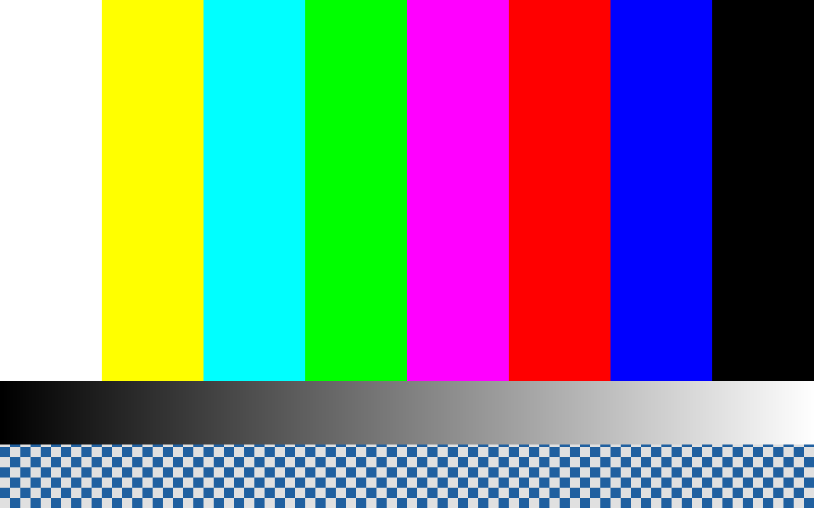

In the emulator
Toile is the guest half of the loop. The host half is
already there: QEMU ships the standard virtio-gpu-pci device. Linked together, a QNX guest
paints through Toile, and the emulator shows it.
The loop
QNX guest (Toile driver) QEMU host (virtio-gpu device)
PCI enumerate 1af4/1050 ───────────────▶ device present
GET_DISPLAY_INFO ───────────────────────▶ scanout 0, 1280×800 enabled
RESOURCE_CREATE_2D + backing ───────────▶ resource registered
SET_SCANOUT ────────────────────────────▶ surface selected for display
paint + flush ──────────────────────────▶ emulator window shows it
TRANSFER_FROM_HOST (0x0206) ◀─────────── read back (numerical proof)One command
./qemu/run-demo.shrun-demo.sh builds the guest image, boots it under QEMU, paints the test pattern from
inside the guest, captures the screen, and reports the verdict. Options via environment variables
(TOILE_SDP, TOILE_WORK, TOILE_VARIANT, TOILE_DISPLAY,
TOILE_TIMEOUT).
What QEMU provides
-device virtio-gpu-pci— the modern (transitional off) device, class03/80/00.-device virtio-vga— the VGA-compatible variant, class03/00/00.-device virtio-gpu-device— the MMIO variant (no PCI).- Only the device exists host-side; the driver for the guest is what Toile contributes.
Proofs
- Visual (done): a screen capture of the QEMU display shows the pattern the guest painted — 1280×800, six colour bars.
- Numerical (pending): the guest paints a known pattern and reads it back through the
device (
TRANSFER_FROM_HOST, 0x0206); a matching checksum proves the pixels travelled guest → emulator → guest. Blocked on opening/dev/gpu0from a client.

screendump. Proof that the guest driver really paints into the emulator
(docs/DEMO-EMULATEUR.md).The current state of the emulator loop is in
docs/TRIALS-E1-E6.md.